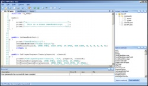

SA-MP Editor
From SA-MP Wiki
SA-MP Editor is a fairly new editor which just arrived out of closed-beta. SA-MP Editor is a feature-rich pawn-editor, with features like code collapsing, advanced compile options, project support, tabs and of course IntelliSense. Combine this with info tips, syntax highlighting and options to improve performance, and you have an editor for large gamemodes and filterscripts. SA-MP Editor was created by Peter.
  SA-MP Editor is the most feature-rich editor around
SA-MP Editor is the most feature-rich editor around
Contents |
[edit]
Benefits
- Native as custom (your-) functions.
- Project support.
- Open multiple files with tabs.
- More advanced compile options.
[edit]
Downsides
- Odd memory use: one moment it uses 34MB's, the other 3MB.
- Could be slow for older computers.
- It's still in beta.
- You'll need the .NET Framework 2 for it to run.
[edit]
Conclusion
SA-MP Editor is designed for creating large scripts/gamemodes, and has features like code-collapsing and IntelliSense. The strange memory use and the fact that it's still in beta are downsides, because errors may occur.
[edit]
Download
You can download the SA-MP Editor Here (Works with 0.3)

{kind=link}